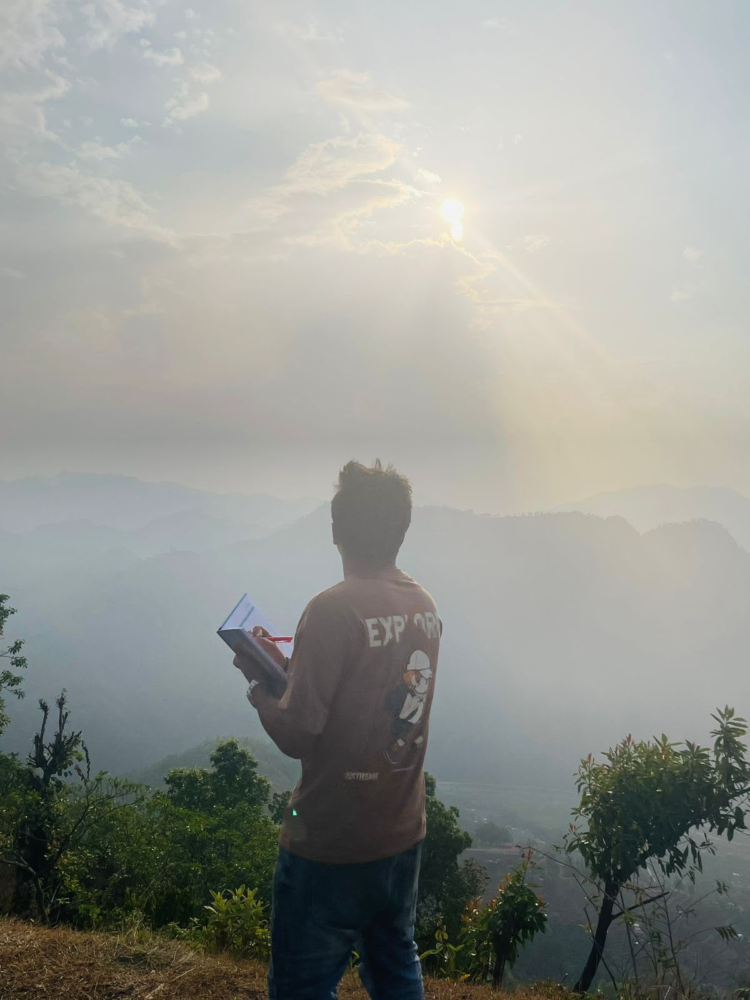
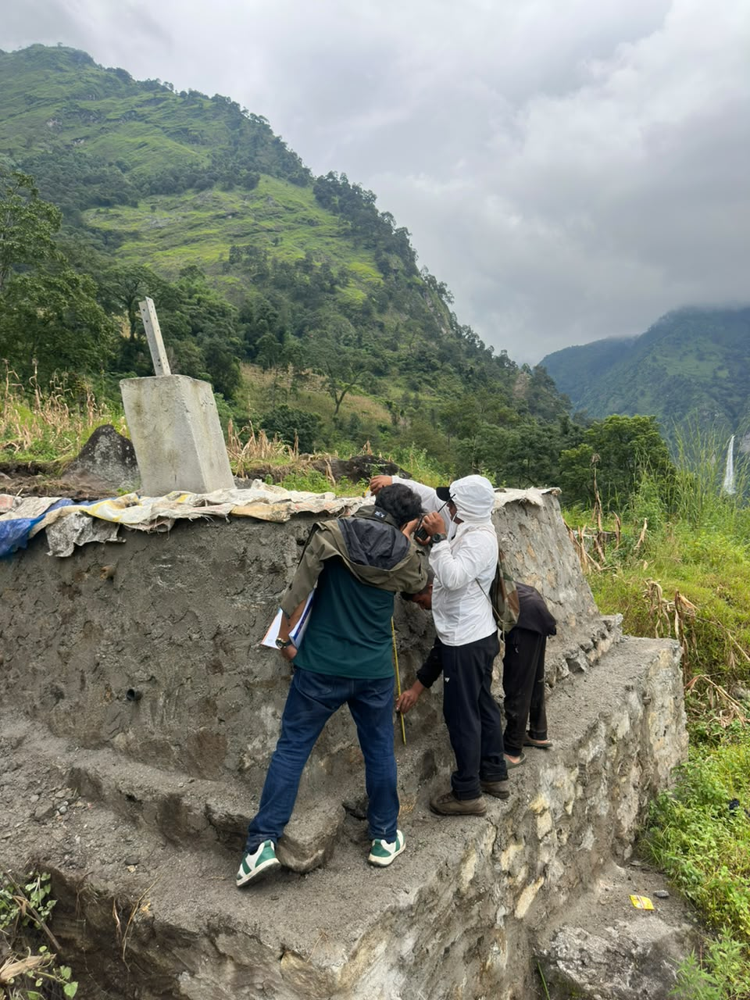
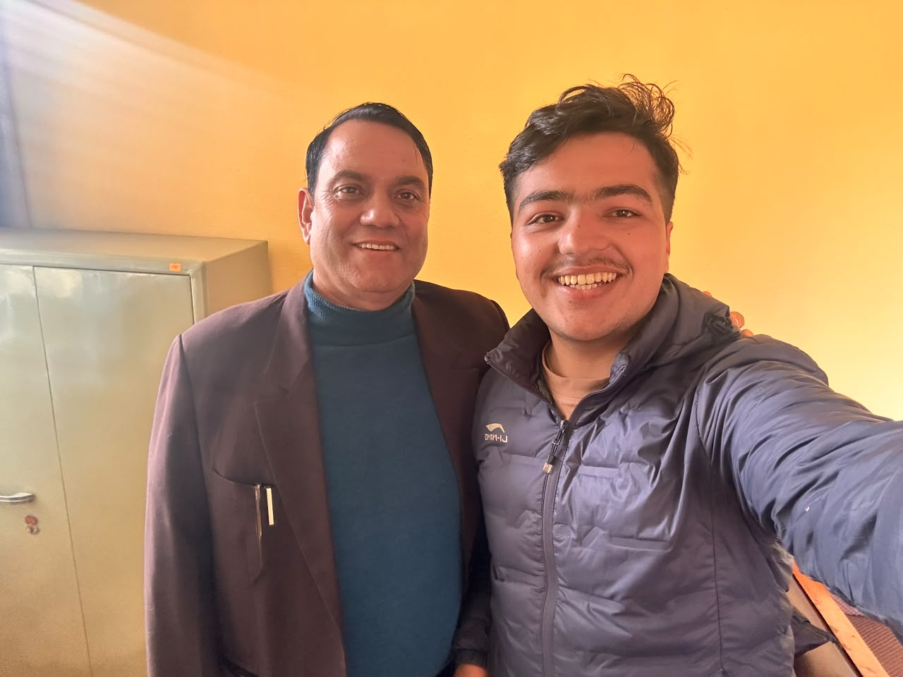
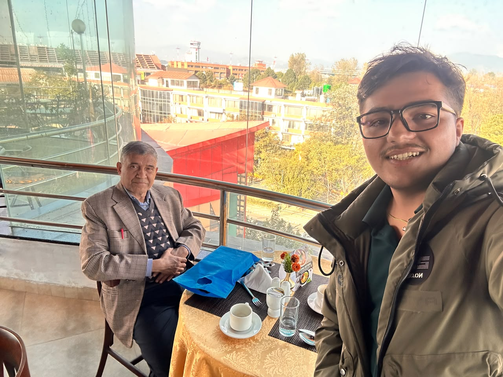
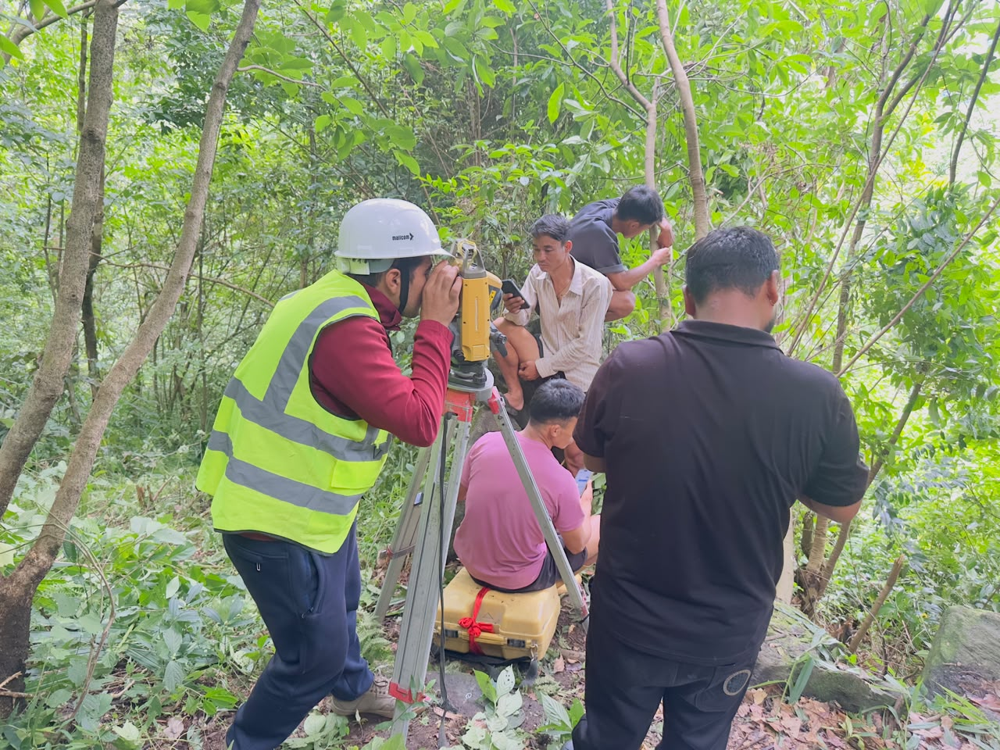
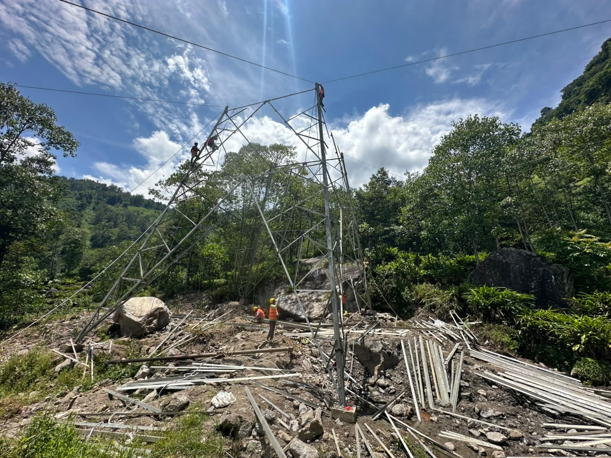
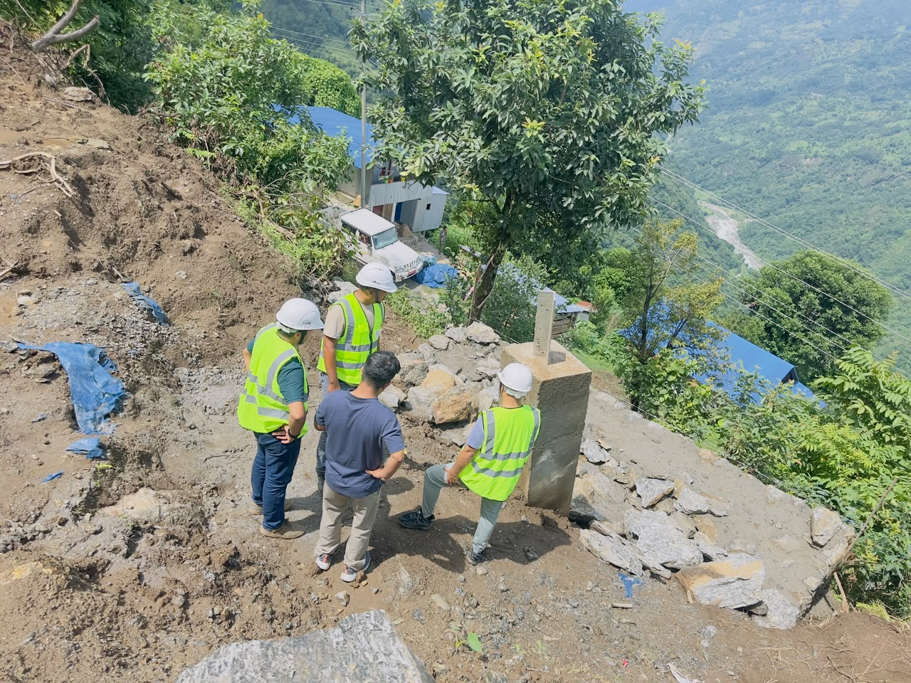
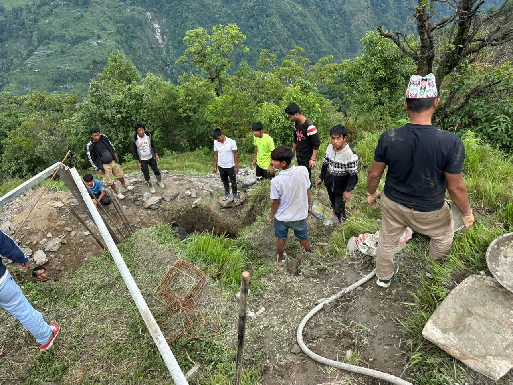
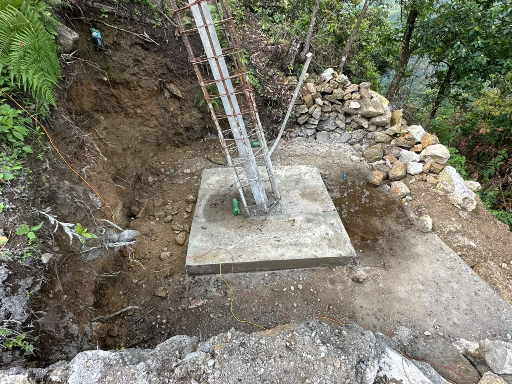
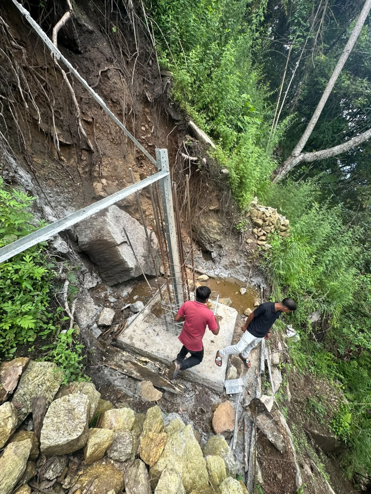

Transmission Line Foundation Supervision
Supervised civil construction for tower footings in steep mountain terrain. Conducted topographic leveling, soil stability checks, and site mitigation to secure foundation structures.
UPLINK ESTABLISHED // UNDERSTANDING THE EARTH BENEATH US
I'm Sujan Paudyal, an Assistant Geologist & Civil Sub-Engineer with 3+ years of Himalayan field operations — geological mapping, slope-stability assessment and foundation supervision on live 132 kV transmission corridors.

B.Sc. Geology · Tri-Chandra Multiple Campus, Tribhuvan University
Where geology meets construction — reading the ground before the first footing is poured.
I'm Sujan Paudyal, a geology graduate from Tri-Chandra Multiple Campus, Tribhuvan University, and currently a Civil Sub-Engineer on an active 132 kV transmission line project in Taplejung. My work sits at the intersection of two disciplines: understanding what the ground is made of, and building safely on top of it.
Across steep Himalayan terrain, that means geological mapping, rock and soil identification, and slope stability assessments on one side, and foundation supervision, site leveling, and construction quality control on the other. That dual lens has shaped my published research on flood dynamics and slope stability, and it now guides how I read a hillside before it's ever touched by a footing.
Explore my research and fieldwork below, or reach out to talk about academic collaboration, geotechnical consulting, or graduate opportunities.

SCAN — FOLIATED OUTCROPCompleted a 4-year curriculum covering Structural Geology, Petrology, Engineering Geology, Hydrogeology, and the Geology of Nepal. Practical training includes geological field mapping, rock mass identification, stratigraphy, and technical field report writing.
Completed technical coursework in Soil Mechanics, Foundation Engineering, Field Surveying, and Highway Engineering alongside foundational sciences. This applied background built a practical understanding of ground stability and soil behavior, directly preparing me for my B.Sc. studies in Engineering Geology.
Completed technical coursework focused on civil engineering fundamentals, basic surveying, and construction materials. This early vocational training provided my first practical exposure to land structures and material behavior, sparking my long-term academic interest in geotechnical engineering and geology.
Rastriya Prasaran Grid Company Limited (RPGCL) | Mewa-Changhe 132 kV Transmission Line Project, Taplejung
Madhyaphawa Khola Jalabidhyut Co-operative Ltd. · 6 Months
Suryabinayak & Phungling Municipalities · 3 Months Each
Grateful for the academic mentors who shaped my path into geology research.


Applied field engineering, geotechnical assessments, and published geological research.

Supervised civil construction for tower footings in steep mountain terrain. Conducted topographic leveling, soil stability checks, and site mitigation to secure foundation structures.

Executed field geological mapping and site surveys along intake and headworks alignments. Evaluated slope stability and rock quality to guide preliminary civil layout planning.

Field-based study analyzing mountain flood hazards, terrain vulnerabilities, and disaster risk management along the transboundary corridor. Published in GeoWorld Students Journal.
Radar-tracked operational sectors across the Nepali Himalaya. Activate a node to fly the orbital viewport to its coordinates.
Decrypted signals from colleagues, mentors, and collaborators who've worked with me in the field.
"Sujan demonstrates exceptional attention to detail in geological fieldwork and communicates complex terrain analysis in a way that helps bridge geology and engineering teams."
"On our transmission line project, Sujan's foundation inspections caught several critical site issues early. His systematic approach to slope stability saved us both time and risk."
"Sujan's contribution to our hydroelectric site assessment was thorough and well-documented. His geological insights shaped our entire site layout strategy."
Moments from site supervision, surveying, and foundation work across Taplejung's terrain. Activate any frame to open the viewer.




Interested in collaboration, research opportunities, or just a conversation? Transmit anytime.
I'm open to graduate research opportunities, consulting, and project collaborations. Let's connect!
Download CVNepali · English (fluent) · Hindi (conversational)